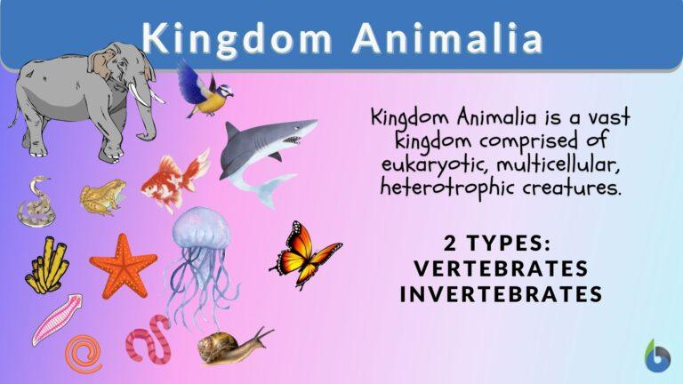

Each person can say that they know of or can name at least one animal. However, do people know that animals are not merely a group but a kingdom? What does Animalia kingdom mean? What defines kingdom Animalia? To define the kingdom Animalia, one must think of it in a biological sense. Kingdom Animalia or just Animalia is a huge kingdom consisting of eukaryotic, multicellular animals that are heterotrophic in nature.
What are the characteristics of Kingdom Animalia? Members of kingdom Animalia lack a cell wall, which is found in plant cells, despite the fact that they are unable to create their own food, which is one of the most distinguishing traits of plants. The majority of animals, with the exception of a few, are motile, which helps them to successfully respond to stimuli and obtain food, among other things. One can also go more into depth about the structure and reproduction and growth characteristics of animals.
Kingdom Animalia is a taxonomic kingdom of living and extinct animals. Members of this kingdom are characterized by being eukaryotic, multicellular, heterotrophic, lacking a cell wall, and mostly are motile.
Let’s find out about the classification of animals. The animal kingdom classification chart helps see clearly the different categories animals are put into. The animal kingdom chart also helps with the different animal kingdom facts that the group possesses.
In general, animals are separated into two groups:
They are, however, separated into various phyla, which will be examined in further depth below.
Vertebrates are all creatures that belong to the Vertebrata subphylum. They are members of the Chordata phylum and have a backbone (vertebrae) (where the spinal cord is located). In addition, they have an internal skeletal system (endoskeleton) to which muscles are joined.
In contrast to cartilaginous or bony vertebrates, invertebrates are any animals that lack a vertebral column or backbone. Invertebrates account for more than 90% of all extant animal species. They are found all over the world and include species such as sea stars, sea urchins, earthworms, sponges, jellyfish, lobsters, crabs, insects, spiders, snails, clams, and squid. Invertebrates are particularly significant as agricultural pests, parasites, or agents for parasitic infection transfer to humans and other vertebrates. Invertebrates provide food for humans, are essential components of food chains that feed birds, fish, and a variety of other vertebrate species, and play critical roles in plant pollination. Despite providing crucial environmental services, invertebrates are frequently overlooked in wildlife study and conservation, with large vertebrate studies taking precedence. Furthermore, numerous invertebrate taxa (including many types of insects and worms) are seen purely as pests, and by the early twenty-first century, widespread pesticide usage had resulted in significant population losses among bees, wasps, and other terrestrial insects.
It is interesting to note that despite all animal kingdom species being multicellular, not all of their cellular arrangements abide by this rule. Animal levels of the organization are categorized into the following categories based on cellular organization patterns:
Phone no:09160062703
Email Address:lawalmumeen63@gmail.com